Практичний досвід · журнал «ДентАрт» 2020 №2
Попереднє відновлення композитом бічних зубів для непрямих реставрацій
Composite Pre-Restoration for Indirect Posterior Restorations
Попереднє відновлення порожнин бічних зубів — це техніка, яку винайшов доктор R. V. Tucker (також називається «блокуванням»). Однією з її особливостей є консервативний підхід шляхом усунення піднутрень у процесі підготовки порожнин під непрямі реставрації.
Коли йдеться про непрямі реставрації, одним з найкращих матеріалів, з точки зору тривалості служби та біосумісності, є золото. Встановлені досвідченими руками золоті вкладки, накладки і накладки-оверлей вирізняються неймовірною довговічністю і точністю. Недоліками цього матеріалу є висока ступінь залежності від дій оператора і неестетичний колір, тому тепер непрямі реставрації із золота роблять дуже рідко.
У багатьох випадках оптимальним варіантом є адгезивні реставрації. «Тиха революція» адгезивної стоматології, про яку писав Жан Франсуа Руле (J. F. Roulet), вже стала сучасним і майбутнім повсякденної клінічної практики. Після виникнення нових технологій підходи змінюються, але дотримуватися певних принципів важливо, як і раніше.
Уявімо, що ми зіткнулися з таким каріозним ураженням — при підготовці порожнини під непряму реставрацію потрібно усунути всі піднутрення, щоб вкладка просто і пасивно встановлювалася в порожнину. У випадку, поданому на схемі, для підготовки порожнини під непряму реставрацію доведеться видалити дуже великий обсяг інтактних тканин (позначений червоною лінією).
Тому тут підійде техніка попереднього відновлення. Консервативний підхід простий — після видалення каріозних тканин потрібно заповнити порожнину реставраційним матеріалом, завдяки чому її можна підготувати менш інвазивно. Фактично, ви заповнюєте більшу частину піднутрень замість того, щоб видаляти інтактні тканини, і піднімаєте рівень дна порожнини. Нині ідеальним матеріалом для створення основи непрямої реставрації, звичайно, є композит. На рисунку видно порожнину меншого розміру (окреслена червоною лінією), нанесений композит (синя зона) і відсутність піднутрень. Заповнення піднутрень з подальшою підготовкою порожнини називається «блокуванням піднутрень». Якщо ж порожнина заповнюється цілком, то, власне кажучи, ідеться про «попереднє відновлення». Іноді таке попереднє відновлення потрібно зробити з кількох причин. Наприклад, якщо слід почекати і переконатися в тому, що пульпа життєздатна, або якщо немає часу на виконання всього комплексу процедур, бо пацієнт звернувся за швидкою допомогою.
Клінічний випадок 1
У цьому клінічному випадку нижній перший моляр з відколом і пломбою з амальгами, яка забарвила навколишні тканини, зуб гостро реагує на подразники, але напади болю дуже короткочасні. Пацієнт звернувся за швидкою допомогою через відкол, але ми повинні терміново провести нескладні процедури, які забезпечать надійний результат.
Після встановлення рабердаму беремося до видалення старої пломби і каріозних тканин. Каріозна порожнина глибока — вона фактично сягає пульпи. Дентин у дистальній зоні дуже темний на вигляд, але після видалення каріозних тканин встановлено, що він щільний.
Дистальний край порожнини розташований досить глибоко, але його можна ізолювати рабердамом. Разом з пацієнтом вирішено зробити попереднє відновлення зуба, щоб почекати і проаналізувати подальшу симптоматику. Відразу виготовляти непряму реставрацію може бути небезпечно і недоцільно, оскільки існує ризик розвитку незворотного пульпіту. Отже, ми просто можемо відтермінувати ендодонтичне лікування, якщо в ньому виникне потреба!
Після необхідної фінішної обробки порожнини, встановлення кругової матриці і обробки дентину й емалі адгезивом відсутні тканини були заміщені композитом, зміцненим діоксидом цирконію (LuxaCore Z, DMG). Процедура потребує небагато часу, пломба виходить міцною і в найближчому майбутньому може послужити основою для непрямої реставрації. У разі виникнення незворотного пульпіту така реставрація є дуже ефективним підготовчим етапом, що передує ендодонтичним процедурам.
Завершено фінішну обробку і полірування попередньої реставрації. Ми будемо спостерігати за станом зуба, щоб з'ясувати, потрібне ендодонтичне лікування чи можна зберегти вітальність зуба і встановити непряму реставрацію.
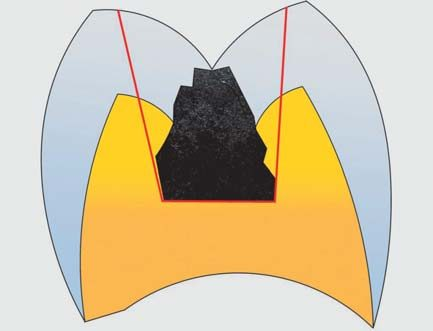
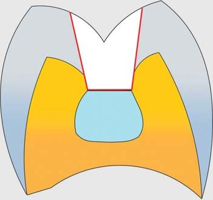
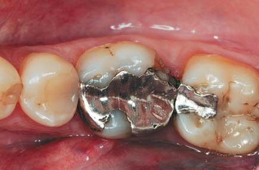
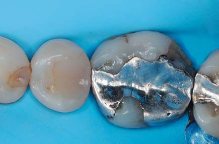
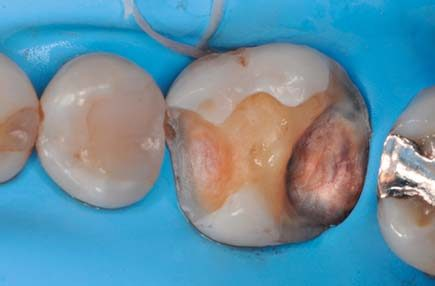
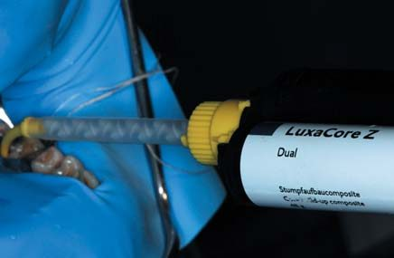
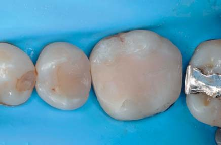
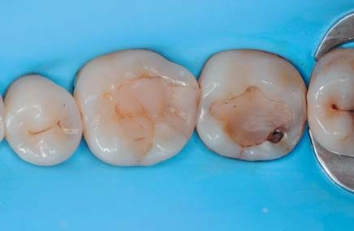
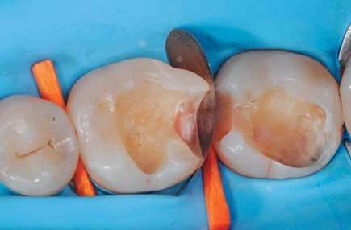
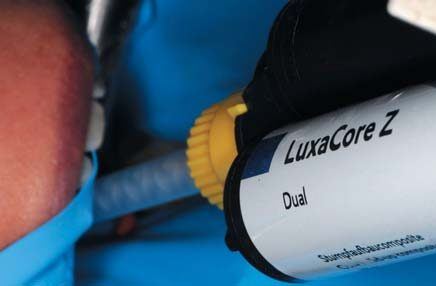
Клінічний випадок 2
Пацієнтка вже має дві старі пломби з порушеним крайовим приляганням на першому і другому нижніх молярах і скаржиться на слабкий контакт між зубами. Вигляд після ізоляції рабердамом. Ситуація після видалення уражених карієсом тканин.
Після адгезивної підготовки емалі й дентину за допомогою композиту подвійного затвердіння, зміцненого оксидом цирконію (LuxaCore Z, DMG), зроблено попереднє відновлення двох зубів. Потім ці зуби підготували до фіксації двох непрямих реставрацій.
Після фінішної підготовки порожнин знято силіконовий відбиток двобічною відтискною ложкою й адитивним силіконом (Honigum, DMG), потім порожнини закрито тимчасовим пломбувальним матеріалом (Luxatemp Inlay, DMG).
За допомогою воску зубний технік на моделі змоделював дві майбутні реставрації (сертифікований зубний технік Паскаль Касабуро (Pasquale Casaburo)). Потім непрямі реставрації були відлиті з літій-дисилікатної кераміки.
Під час другого відвідування було видалено тимчасові реставрації і зроблено примірювання накладок, щоб перевірити точність посадки і щільність контактного пункту. Встановлено рабердам. Далі з рабердамом знову зроблено примірку реставрації. Після ізоляції другого моляра зроблено адгезивну підготовку.
Накладка протягом 20 секунд протравлена плавиковою кислотою, після чого промита і повністю висушена. Потім нанесли силан і нагріли його (Vitique Silane, DMG). Після цього накладено шар адгезиву. Нанесено композитний цемент подвійного затвердіння (PermaCem, DMG), і зафіксована накладка. Те ж саме було зроблено з першим моляром.
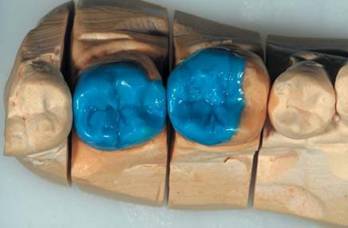
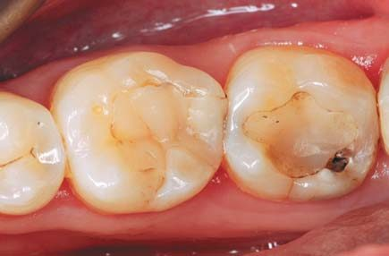
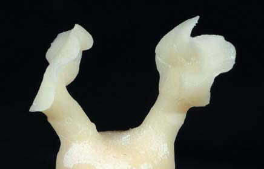
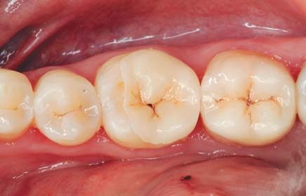
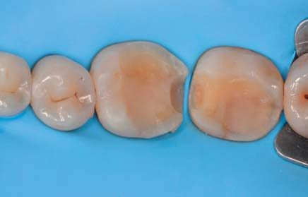
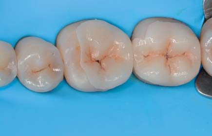
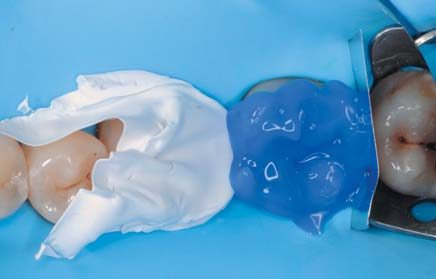
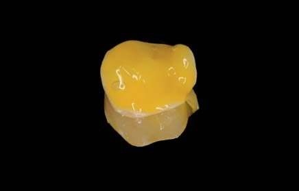
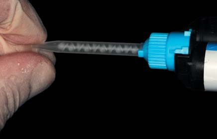
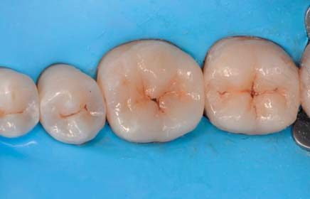
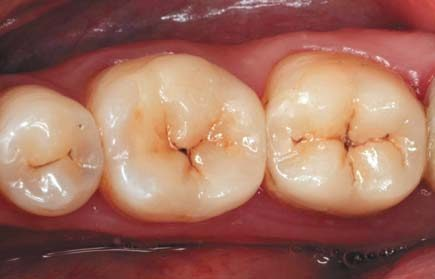
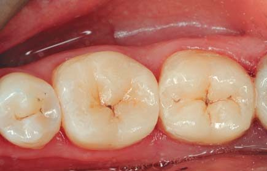
Висновки
Непрямі реставрації в адгезивній техніці — це чудовий спосіб усунення великих дефектів зубів. Техніки блокування і попереднього відновлення можуть бути дуже корисними, бо дозволяють підходити до відновлення більш консервативно і зберегти великий обсяг здорових тканин. Також ці техніки дуже корисні у випадках з невизначеним прогнозом стану пульпи — створення міцної і стабільної реставрації з ідеальною герметичністю може бути універсальним рішенням, яке за необхідності дозволить перетворити композитну основу, створену для непрямої реставрації, на реставрацію, призначену для подальшого ендодонтичного лікування.
Міцний, надійний і зручний у застосуванні матеріал, з якого можна швидко виготовити реставрацію, може зіграти справді важливу роль у процесі правильного ведення таких клінічних випадків.
Література
- Roulet J. F. Adhesion: the silent revolution. 2nd European Symposium on Adhesive Dentistry: 7-9 May 1999. J Adhes Dent. 1999 Autumn; 1(3): 285-7.
- Tucker R. V. Why gold castings are excellent restorations. Oper Dent. 2008 Mar-Apr; 33(2): 113-5.